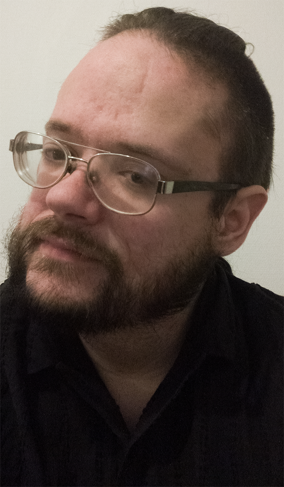
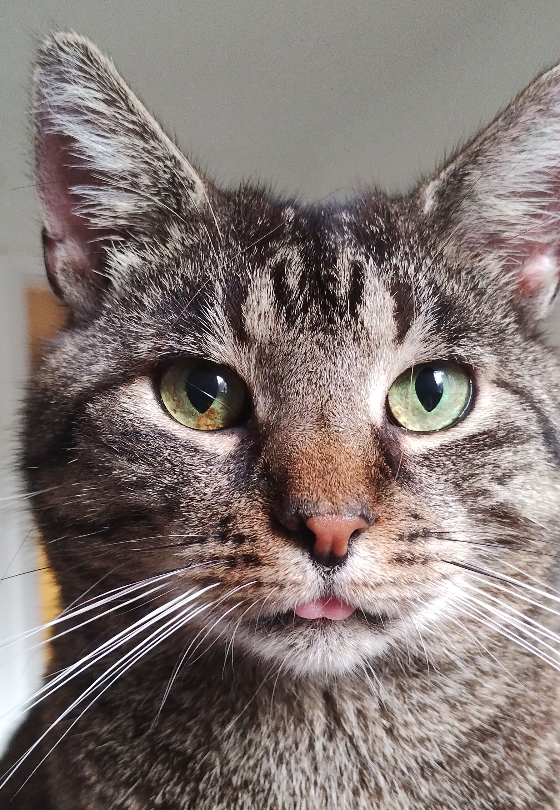

I’m a designer who enjoys creating visually appealing and functional web and graphic designs. I focus on creativity and attention to detail, aiming to make every user interaction smooth, meaningful, and memorable... 🖌


Skills
Completed web design course through the App Brewery, sparking a genuine interest in web design
Completed courses in graphic design and web design
Proficient in Adobe Photoshop, InDesign, and Illustrator
Skilled in visual communication and graphic design principles
Fluent in Swedish and English, bilingual
Adept at drawing (Portfolio can be provided)
Additional Info
Eager to apply creative skills in web and graphic design to new challenges
Passionate about continuous learning and self-improvement
Resilient, self-aware, and adaptable
Education
Bachelor's Degree in English
Strong communication and analytical skills
Gymnasieexamen i Datateknik
Foundational knowledge in data technology
About Me
I'm passionate about personal growth and always seek opportunities to step beyond my comfort zone. Whether it's through reading, podcasts, movies, shows, or gaming, I’m constantly looking for new ways to broaden my horizons. Fitness plays an important role in my life, and I make it a priority to work out regularly.
Professionally, I’m drawn to the creative world of web and graphic design. I thrive on using technology to turn ideas into reality, whether it's digital art or intricate web designs. The challenges of web design keep me engaged, and I take pride in visualizing concepts and bringing them to life.
My journey hasn’t been without challenges, but they’ve shaped who I am today. Working through them has taught me discipline, patience, and resilience — and led to meaningful friendships along the way.
I’m wired to focus deeply and notice the fine details others might miss, which I see as a strength in both life and design. My ultimate goal is to land a rewarding web design job that allows me to pursue a digital nomad lifestyle, traveling the world while doing what I love.
In collaboration, I value respect and integrity above all. While I enjoy working independently, I also appreciate teamwork and support when needed. I’m drawn to projects that challenge me creatively and offer the freedom to explore new ideas and places.